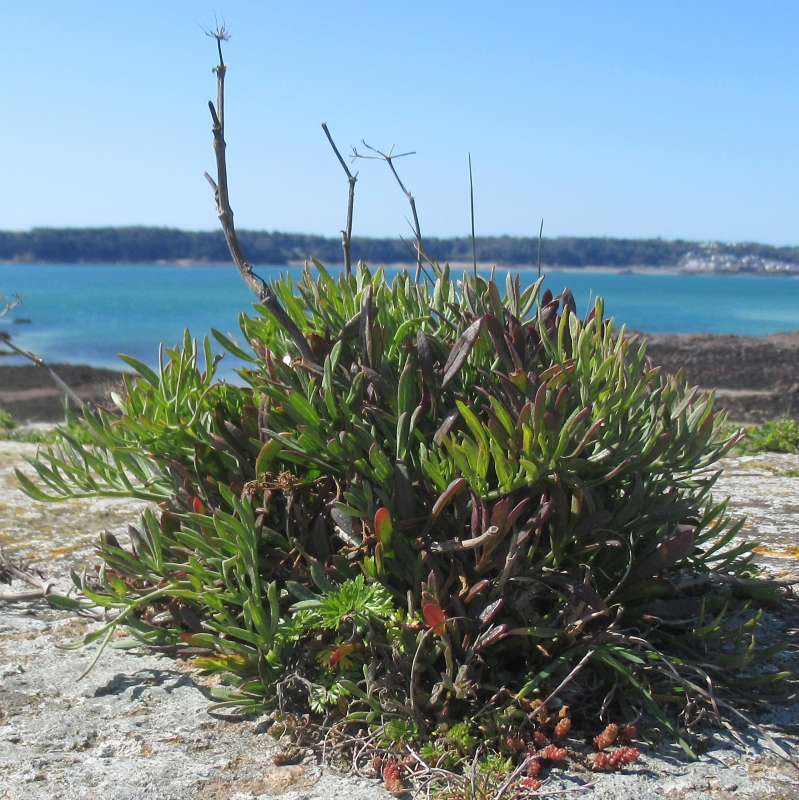

D'la Perche-Pierre
La "British Press" de Jeudi au sé, dans la partie qu'i' rêserve à ses correspondants, publiait une lettre qu'avait pour entête le mot "Perche-Pierre" en Angliais.

Les deux prumié lignes dé chutte lettre-là taient:
Half way down
Hangs one that gathers samphire: Dreadful trade!
|
L'écrivain disait qu'il avait une certaine idée que l'mot Angliais pouor le mot Jerriais "Perche-Pierre" était samphire; et i' voulait s'asseuthé si tchique correspondant éthait la bonté d'l'i faithe à saver si, oui ou non, la perche-pierre est oquo minse au picq'l'ye en Jerri et si ch'est qu'i' y'en éthait bein à vendre?
J'peux l'i répondre à chatchune des tchestchons: Mais certainement, qu'i' y'en a.
Si nou z'en met au picq'l'ye oquoth' en Jerri? Quéman, mais mé qui vos écrit chunnechin j'en ai mangi n'y a pas bein longtemps, d'la perche-pierre au picq'l'ye. Bein pus qu'chonno j'puorrais inditchi au moussieu qui d'mande la tchestchon, la plièche oùest qu'j'alli la cherchi un Lundi matin (lé prumié Lundi d'Août) après la distribution des lots d'feûgiéthe, feug'tholles, bruyèthe et grapue sus les Hougues, y a deux ans. J'avais sorti dé d'siez nous presque à solèt l'vant pour être en temps et oprès l'allot'tie, j'men fu à une belle pétite niche que j'savais bein et j'en ramassi une immense mouochtée. Jé m'rappelle oquo qu'j'en avais ramassé tant et si bein qué j'en perdi des tas l'long d'la route en m'en r'venant! J'en avais ramassè assez pour en picq'l'yi deux ou treis bouannes grand' boutill'yies et j'peux vos dithe qué j'nos en rigalîmes bein, pus de l'aigre, du pèvre, du cliou d'giroufl'ye; j'vos asseuthe qué j'nos en "litchaîmes bein les babines" et qu'tout n'fut pas perdu...
Mais ch'n'est pas seulement sus les Hougues que nou z'en trouve, j'en ai ramassé bein ailleurs, à Bouanne-Nièt, par exempl'ye, à côté du Havre Giffard; à la Corbiéthe, et sans doute bein ailleurs, nou z'en trouve sus les rotchers qui n'couvrent jamais, et sus les grosses pierres qui s'lèvent lé long des falaizes.
Là, PÈRRCHÉ-PIÈRRHE, es-tu satisfait? N'têffritte pas les lignes à Shakespeare. Nou peut aver tout plien d'perche-pierre en Jerry sans être descendus avaut des falaises au but d'une longue corde. (Faut qu'j'admette, pourtant, que j'ai ouï dithe à nouos gens que ch'là ou tchique chose de la sorte lus a arrivé à yeux mêmes, si n'taient pon au bu d'la corde, tchitchun d'yeux aidjait à t'nin la belte qui suot'nait lé sien qui ramassait la pliante!) Mais i n'y a autchun bésoin de quorre chès risques-là. Nou peut ramasser la perche-pierre sans pus d'dangi qui n'ya à tchilli des muothes ou à ramasser des champignins à 5 heuthes du matin.
J'espèthe qué "PÈRRCHÉ-PIÈRRHE" (chutte manièthe là d'êp'ler l'mot m'fait tout l'temps penser à CH'LA S'PEUT) essa content dé mes deux mots. S'i' veurt d'autres expl'yikations, - mé f'chin. Quant à la sienne qu'ils ont en Angliéterre j'n'y connais rein, mais j'cré bein qu'ch'est tout d'la même sorte.
Elie.
Sans doute, jé n'sé pas tchès qu'est Pèrrché-Pièrrhe - mais i m'sembl'ye que si j'voulais perchi à travers le mot PÈRRCHÉ-PIÈRRHE...
Viyiz étout: